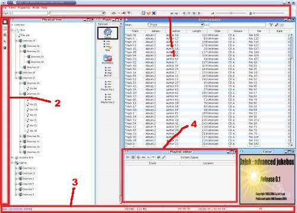

Jajuk est composé de perspectives et de vues. Une perspective est un ensemble logique de vues. Par exemple, vous êtes actuellement dans la perspective "Aide" et vous voulez afficher la Perspective Physique pour naviguer dans les fichiers du disque, dans les répertoires ; ou vous voulez afficher la Perspective Logique pour naviguer dans les styles, les auteurs, les albums ou les morceaux.
Une vue est située dans une perspective et affiche des informations liées. Par exemple, la perspective physique contient à la fois la vue "Arbre physique" et la vue "Table physique".
Il y a deux types de vues : les vues statiques (commandes, informations, et la barre des perspectives) qui sont affichées dans toutes les perspectives, et des vues contextuelles qui sont spécifiques à une perspective. Notez qu'une même vue peut se retrouver dans plusieurs perspectives (la vue "Couverture" par exemple)
Pour changer la perspective en cours, il faut cliquer sur l'icône de votre choix dans la vue "Sélection de la Perspective" (Voir Figure 02)

Fig.
01: Vues
Vues Statiques (Dans toutes les perspectives) :
1-
Vue "Commande" : utilisée pour faire des recherches,
pour contrôler le lecteur (stop, pause, etc.) et le son (mute,
volume). Il permet aussi de naviguer dans l'historique, de
sélectionner le mode (répéter, aléatoire)
et d'accéder à des fonctions spéciales comme
'bestof'.
2- Sélection de la perspective : utilisée
pour sélectionner la perspective courante (voir le paragraphe
suivant).
3- Vue "Information" : affiche des
informations variées, la taille de la sélection, la
qualité du fichier audio, la position de lecture en
pourcentage
Vues contextuelles :
4- C'est un exemple de
vue contextuelle (l'éditeur de playliste physique) que vous ne
trouverez uniquement dans la perspective Physique.
Jajuk contient les perspectives suivantes :
 Perspective Physique : dans cette perspective,
votre collection est affichée telle qu'elle est réellement
sur vos disques : fichier, répertoires, fichiers M3U, etc.
Toute action est exécutée sur un fichier physique
donné. Cette perspective est utile mais notez que si vous avez
plusieurs fois le même morceau sur différents supports
(une sur le disque dur et l'autre sur un CD), alors vous la verrez
deux fois sur toutes les vues. Il en va de même pour la
playliste.
Perspective Physique : dans cette perspective,
votre collection est affichée telle qu'elle est réellement
sur vos disques : fichier, répertoires, fichiers M3U, etc.
Toute action est exécutée sur un fichier physique
donné. Cette perspective est utile mais notez que si vous avez
plusieurs fois le même morceau sur différents supports
(une sur le disque dur et l'autre sur un CD), alors vous la verrez
deux fois sur toutes les vues. Il en va de même pour la
playliste.
 Perspective Logique : dans cette perspective,
votre collection est présentée suivant les meta-données
tels que les styles de musique, les auteurs, les albums, les morceaux
et les playlistes logiques (une playliste logique cartographie
plusieurs playlistes m3u physiques). Cette perspective est
utile dans le seul cas où votre collection est correctement
constituée. Dans le cas contraire, tout sera marqué
comme "inconnu". A l'opposé de la playliste
physique, vous verrez des morceaux, et non des fichiers. Un morceau
correspond à un ou plusieurs fichiers. Cela signifie que vous
verrez un morceau une seule fois, même si plusieurs fichiers
physiques le constituent. Si vous modifiez une playliste logique,
alors toutes les playlistes physiques associées (fichier .m3u)
seront également modifiées.
Perspective Logique : dans cette perspective,
votre collection est présentée suivant les meta-données
tels que les styles de musique, les auteurs, les albums, les morceaux
et les playlistes logiques (une playliste logique cartographie
plusieurs playlistes m3u physiques). Cette perspective est
utile dans le seul cas où votre collection est correctement
constituée. Dans le cas contraire, tout sera marqué
comme "inconnu". A l'opposé de la playliste
physique, vous verrez des morceaux, et non des fichiers. Un morceau
correspond à un ou plusieurs fichiers. Cela signifie que vous
verrez un morceau une seule fois, même si plusieurs fichiers
physiques le constituent. Si vous modifiez une playliste logique,
alors toutes les playlistes physiques associées (fichier .m3u)
seront également modifiées.
 Perspective Lecteur : utilisée pour
afficher diverses informations pendant la lecture des morceaux : Une
vue "Animation" avec une zone texte très large pour
afficher le nom des morceaux et deux vues pour afficher des
jaquettes.
Perspective Lecteur : utilisée pour
afficher diverses informations pendant la lecture des morceaux : Une
vue "Animation" avec une zone texte très large pour
afficher le nom des morceaux et deux vues pour afficher des
jaquettes.
Perspective Configuration : elle contient des vues pour configurer Jajuk (option) et pour créer et modifier des supports. Un support est un ensemble de fichiers physiques (comme un répertoire sur le disque dur, un CD, un lecteur...).
 Perspective Statistiques : elle contient
différents camemberts et histogrammes sur votre collection:
nombre de morceaux, taille des périphériques, la
répartition des styles, la taille de la collection.
Perspective Statistiques : elle contient
différents camemberts et histogrammes sur votre collection:
nombre de morceaux, taille des périphériques, la
répartition des styles, la taille de la collection.
 Perspective Aide : C'est la perspective que vous
êtes en train de lire. Elle contient l'aide concernant Jajuk et
la vue "A propos" qui fournit plusieurs informations sur le
projet et l'environnement d'exécution.
Perspective Aide : C'est la perspective que vous
êtes en train de lire. Elle contient l'aide concernant Jajuk et
la vue "A propos" qui fournit plusieurs informations sur le
projet et l'environnement d'exécution.
L'interface de Jajuk peut être organisée à votre convenance: vous pouvez retailler les dimensions des fenêtres, (agrandir ou réduire), déplacer une vue et l'ajouter dans une autre vue sous la forme d'un onglet... Si vous ne vous y retrouvez plus, restaurez les vues par défaut en utilisant la vue Commande Vue-> Restaurer les paramètres par défaut. Bien sûr, la position de vos vues et leur configuration seront sauvegardées quand vous fermerez Jajuk.